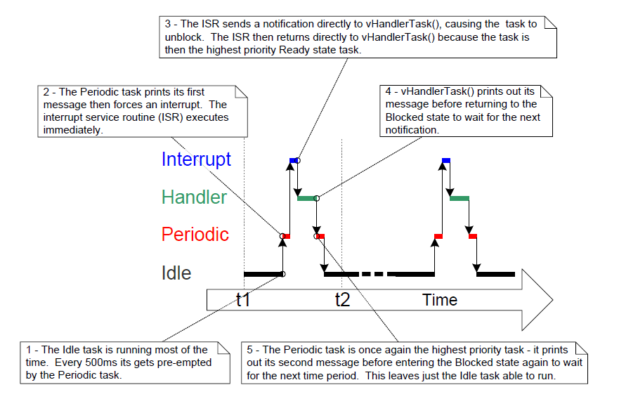
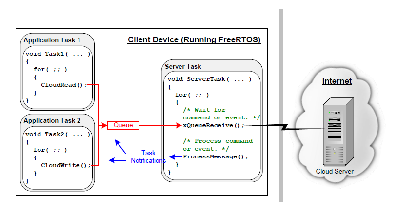

10 Task Notifications
10.1 Introduction
FreeRTOS applications are typically structured as a series of independent tasks that communicate with each other to collectively provide the system functionality. Task notifications are an efficient mechanism allowing one task to directly notify another task.
10.1.1 Communicating Through Intermediary Objects
This book has already described various ways in which tasks can communicate with each other. The methods described so far have required the creation of a communication object. Examples of communication objects include queues, event groups, and various different types of semaphore.
When a communication object is used, events and data are not sent directly to a receiving task, or a receiving ISR, but are instead sent to the communication object. Likewise, tasks and ISRs receive events and data from the communication object, rather than directly from the task or ISR that sent the event or data. This is depicted in Figure 10.1.

Figure 10.1 A communication object being used to send an event from one task to another
10.1.2 Task Notifications—Direct to Task Communication
'Task Notifications' allow tasks to interact with other tasks, and to synchronize with ISRs, without the need for a separate communication object. By using a task notification, a task or ISR can send an event directly to the receiving task. This is depicted in Figure 10.2.

Figure 10.2 A task notification used to send an event directly from one task to another
Task notification functionality is optional. To include task
notification functionality set configUSE_TASK_NOTIFICATIONS to 1 in FreeRTOSConfig.h.
When configUSE_TASK_NOTIFICATIONS is set to 1, each task has at least one
'Notification State', which can be either 'Pending' or 'Not-Pending',
and a 'Notification Value', which is a 32-bit unsigned integer. When a
task receives a notification, its notification state is set to pending.
When a task reads its notification value, its notification state is set
to not-pending. If the configTASK_NOTIFICATION_ARRAY_ENTRIES is set to a value
> 1 then there are multiple Notification states and values identified by index.
A task can wait in the Blocked state, with an optional time out, for its notification state to become pending.
10.1.3 Scope
This chapter discusses:
- A task's notification state and notification value.
- How and when a task notification can be used in place of a communication object, such as a semaphore.
- The advantages of using a task notification in place of a communication object.
10.2 Task Notifications; Benefits and Limitations
10.2.1 Performance Benefits of Task Notifications
Using a task notification to send an event or data to a task is significantly faster than using a queue, semaphore or event group to perform an equivalent operation.
10.2.2 RAM Footprint Benefits of Task Notifications
Likewise, using a task notification to send an event or data to a task
requires significantly less RAM than using a queue, semaphore or event
group to perform an equivalent operation. This is because each
communication object (queue, semaphore or event group) must be created
before it can be used, whereas enabling task notification functionality
has a fixed overhead. The RAM cost for task notifications is
configTASK_NOTIFICATION_ARRAY_ENTRIES * 5 bytes per task. The
default value for configTASK_NOTIFICATION_ARRAY_ENTRIES is 1 making
the default size for task notifications is 5 bytes per task.
10.2.3 Limitations of Task Notifications
Task notifications are faster and use less RAM than communication objects, but task notifications cannot be used in all scenarios. This section documents the scenarios in which a task notification cannot be used:
-
Sending an event or data to an ISR
Communication objects can be used to send events and data from an ISR to a task, and from a task to an ISR.
Task notifications can be used to send events and data from an ISR to a task, but they cannot be used to send events or data from a task to an ISR.
-
Enabling more than one receiving task
A communication object can be accessed by any task or ISR that knows its handle (which might be a queue handle, semaphore handle, or event group handle). Any number of tasks and ISRs can process events or data sent to any given communication object.
Task notifications are sent directly to the receiving task, so they can only be processed by the task to which the notification is sent. However, this is rarely a limitation in practical cases because, while it is common to have multiple tasks and ISRs sending to the same communication object, it is rare to have multiple tasks and ISRs receiving from the same communication object.
-
Buffering multiple data items
A queue is a communication object that can hold more than one data item at a time. Data that has been sent to the queue, but not yet received from the queue, is buffered inside the queue object.
Task notifications send data to a task by updating the receiving task's notification value. A task's notification value can only hold one value at a time.
-
Broadcasting to more than one task
An event group is a communication object that can be used to send an event to more than one task at a time.
Task notifications are sent directly to the receiving task, so can only be processed by the receiving task.
-
Waiting in the blocked state for a send to complete
If a communication object is temporarily in a state that means no more data or events can be written to it (for example, when a queue is full no more data can be sent to the queue), then tasks attempting to write to the object can optionally enter the Blocked state to wait for their write operation to complete.
If a task attempts to send a task notification to a task that already has a notification pending, then it is not possible for the sending task to wait in the Blocked state for the receiving task to reset its notification state. As will be seen, this is rarely a limitation in practical cases in which a task notification is used.
10.3 Using Task Notifications
10.3.1 Task Notification API Options
Task notifications are a very powerful feature that can often be used in
place of a binary semaphore, a counting semaphore, an event group, and
sometimes even a queue. This wide range of usage scenarios can be
achieved by using the xTaskNotify() API function to send a task
notification, and the xTaskNotifyWait() API function to receive a task
notification.
However, in the majority of cases, the full flexibility provided by the
xTaskNotify() and xTaskNotifyWait() API functions is not required, and
simpler functions would suffice. Therefore, the xTaskNotifyGive() API
function is provided as a simpler but less flexible alternative to
xTaskNotify(), and the ulTaskNotifyTake() API function is provided as a
simpler but less flexible alternative to xTaskNotifyWait().
The task notification system is not limited to a single notification event. The
configuration parameter configTASK_NOTIFICATION_ARRAY_ENTRIES is set to 1 by default.
If it is set to a value greater than 1, an array of notifications are created inside
each task. This allows notifications to be managed by index. Every task
notification api function has an indexed version. Using the non-indexed version
will result in accessing notification[0] (the first one in the array). The indexed
version of each API function is identified by the suffix Indexed so the function
xTaskNotify becomes xTaskNotifyIndexed. For simplicity only the non-indexed
versions of each function will be used throughout this book.
The task notification API's are implemented as macro that make calls to the
underlying Generic versions of each API function type. For simplicy the API
macros will be called functions throughout this book.
10.3.1.1 The complete list of API functions 27
xTaskNotifyGivexTaskNotifyGiveIndexedvTaskNotifyGiveFromISRvTaskNotifyGiveIndexedFromISRvTaskNotifyTakevTaskNotifyTakeIndexedxTaskNotifyxTaskNotifyIndexedxTaskNotifyWaitxTaskNotifyWaitIndexedxTaskNotifyStateClearxTaskNotifyStateClearIndexedulTaskNotifyValueClearulTaskNotifyValueClearIndexedxTaskNotifyAndQueryIndexedFromISRxTaskNotifyAndQueryFromISRxTaskNotifyFromISRxTaskNotifyIndexedFromISRxTaskNotifyAndQueryxTaskNotifyAndQueryIndexed
(27): These functions are actually implemented as macros.
Note: The
FromISRfunctions do not exist for receiving notifications because a notification is always sent to a task and interrupts are not associated with any task.
10.3.2 The xTaskNotifyGive() API Functions
xTaskNotifyGive() sends a notification directly to a task, and
increments (adds one to) the receiving task's notification value.
Calling xTaskNotifyGive() will set the receiving task's notification
state to pending, if it was not already pending.
The xTaskNotifyGive() API function is provided to allow a task
notification to be used as a lighter weight and faster alternative to a
binary or counting semaphore.
BaseType_t xTaskNotifyGive( TaskHandle_t xTaskToNotify );
BaseType_t xTaskNotifyGiveIndexed( TaskHandle_t xTaskToNotify, UBaseType_t uxIndexToNotify );
Listing 10.1 The xTaskNotifyGive() API function prototype
xTaskNotifyGive()/xTaskNotifyGiveIndexed() parameters and return value
-
xTaskToNotifyThe handle of the task to which the notification is being sent—see the
pxCreatedTaskparameter of thexTaskCreate()API function for information on obtaining handles to tasks. -
uxIndexToNotifyThe index into the array
-
Return value
xTaskNotifyGive()is a macro that callsxTaskNotify(). The parameters passed intoxTaskNotify()by the macro are set such thatpdPASSis the only possible return value.xTaskNotify()is described later in this book.
10.3.3 The vTaskNotifyGiveFromISR() API Function
vTaskNotifyGiveFromISR() is a version of xTaskNotifyGive() that can be
used in an interrupt service routine.
void vTaskNotifyGiveFromISR( TaskHandle_t xTaskToNotify,
BaseType_t *pxHigherPriorityTaskWoken );
Listing 10.2 The vTaskNotifyGiveFromISR() API function prototype
vTaskNotifyGiveFromISR() parameters and return value
-
xTaskToNotifyThe handle of the task to which the notification is being sent—see the
pxCreatedTaskparameter of thexTaskCreate()API function for information on obtaining handles to tasks. -
pxHigherPriorityTaskWokenIf the task to which the notification is being sent is waiting in the Blocked state to receive a notification, then sending the notification will cause the task to leave the Blocked state.
If calling
vTaskNotifyGiveFromISR()causes a task to leave the Blocked state, and the unblocked task has a priority higher than the priority of the currently executing task (the task that was interrupted), then, internally,vTaskNotifyGiveFromISR()will set*pxHigherPriorityTaskWokentopdTRUE.If
vTaskNotifyGiveFromISR()sets this value topdTRUE, then a context switch should be performed before the interrupt is exited. This will ensure that the interrupt returns directly to the highest priority Ready state task.As with all interrupt safe API functions, the
pxHigherPriorityTaskWokenparameter must be set topdFALSEbefore it is used.
10.3.4 The ulTaskNotifyTake() API Function
ulTaskNotifyTake() allows a task to wait in the Blocked state for its
notification value to be greater than zero, and either decrements
(subtracts one from) or clears the task's notification value before it
returns.
The ulTaskNotifyTake() API function is provided to allow a task
notification to be used as a lighter weight and faster alternative to a
binary or counting semaphore.
uint32_t ulTaskNotifyTake( BaseType_t xClearCountOnExit, TickType_t
xTicksToWait );
Listing 10.3 The ulTaskNotifyTake() API function prototype
ulTaskNotifyTake() parameters and return value
-
xClearCountOnExitIf
xClearCountOnExitis set topdTRUE, then the calling task's notification value will be cleared to zero before the call toulTaskNotifyTake()returns.If
xClearCountOnExitis set topdFALSE, and the calling task's notification value is greater than zero, then the calling task's notification value will be decremented before the call toulTaskNotifyTake()returns. -
xTicksToWaitThe maximum amount of time the calling task should remain in the Blocked state to wait for its notification value to be greater than zero.
The block time is specified in tick periods, so the absolute time it represents is dependent on the tick frequency. The macro
pdMS_TO_TICKS()can be used to convert a time specified in milliseconds to a time specified in ticks.Setting
xTicksToWaittoportMAX_DELAYwill cause the task to wait indefinitely (without timing out), providedINCLUDE_vTaskSuspendis set to 1 inFreeRTOSConfig.h. -
Return value
The returned value is the calling task's notification value before it was either cleared to zero or decremented, as specified by the value of the
xClearCountOnExitparameter.If a block time was specified (
xTicksToWaitwas not zero), and the return value is not zero, then it is possible the calling task was placed into the Blocked state to wait for its notification value to be greater than zero, and its notification value was updated before the block time expired.If a block time was specified (
xTicksToWaitwas not zero), and the return value is zero, then the calling task was placed into the Blocked state to wait for its notification value to be greater than zero, but the specified block time expired before that happened.
Example 10.1 Using a task notification in place of a semaphore, method 1
Example 7.1 used a binary semaphore to unblock a task from within an interrupt service routine—effectively synchronizing the task with the interrupt. This example replicates the functionality of Example 7.1, but uses a direct to task notification in place of the binary semaphore.
Listing 10.4 shows the implementation of the task that is synchronized
with the interrupt. The call to xSemaphoreTake() that was used in
Example 7.1 has been replaced by a call to ulTaskNotifyTake().
The ulTaskNotifyTake() xClearCountOnExit parameter is set to pdTRUE,
which results in the receiving task's notification value being cleared
to zero before ulTaskNotifyTake() returns. It is therefore necessary to
process all the events that are already available between each call to
ulTaskNotifyTake(). In Example 7.1, because a binary semaphore was used,
the number of pending events had to be determined from the hardware,
which is not always practical. In Example 10.1, the number of pending
events is returned from ulTaskNotifyTake().
Interrupt events that occur between calls to ulTaskNotifyTake are
latched in the task's notification value, and calls to
ulTaskNotifyTake() will return immediately if the calling task already
has notifications pending.
/* The rate at which the periodic task generates software interrupts. */
const TickType_t xInterruptFrequency = pdMS_TO_TICKS( 500UL );
static void vHandlerTask( void *pvParameters )
{
/* xMaxExpectedBlockTime is set to be a little longer than the maximum
expected time between events. */
const TickType_t xMaxExpectedBlockTime = xInterruptFrequency +
pdMS_TO_TICKS( 10 );
uint32_t ulEventsToProcess;
/* As per most tasks, this task is implemented within an infinite loop. */
for( ;; )
{
/* Wait to receive a notification sent directly to this task from the
interrupt service routine. */
ulEventsToProcess = ulTaskNotifyTake( pdTRUE, xMaxExpectedBlockTime );
if( ulEventsToProcess != 0 )
{
/* To get here at least one event must have occurred. Loop here
until all the pending events have been processed (in this case,
just print out a message for each event). */
while( ulEventsToProcess > 0 )
{
vPrintString( "Handler task - Processing event.\r\n" );
ulEventsToProcess--;
}
}
else
{
/* If this part of the function is reached then an interrupt did
not arrive within the expected time, and (in a real application)
it may be necessary to perform some error recovery operations. */
}
}
}
Listing 10.4 The implementation of the task to which the interrupt processing is deferred (the task that synchronizes with the interrupt) in Example 10.1
The periodic task used to generate software interrupts prints a message before the interrupt is generated, and again after the interrupt has been generated. This allows the sequence of execution to be observed in the output produced.
Listing 10.5 shows the interrupt handler. This does very little other than send a notification directly to the task to which interrupt handling is deferred.
static uint32_t ulExampleInterruptHandler( void )
{
BaseType_t xHigherPriorityTaskWoken;
/* The xHigherPriorityTaskWoken parameter must be initialized to pdFALSE as
it will get set to pdTRUE inside the interrupt safe API function if a
context switch is required. */
xHigherPriorityTaskWoken = pdFALSE;
/* Send a notification directly to the task to which interrupt processing
is being deferred. */
vTaskNotifyGiveFromISR( /* The handle of the task to which the notification
is being sent. The handle was saved when the task
was created. */
xHandlerTask,
/* xHigherPriorityTaskWoken is used in the usual
way. */
&xHigherPriorityTaskWoken );
/* Pass the xHigherPriorityTaskWoken value into portYIELD_FROM_ISR(). If
xHigherPriorityTaskWoken was set to pdTRUE inside vTaskNotifyGiveFromISR()
then calling portYIELD_FROM_ISR() will request a context switch. If
xHigherPriorityTaskWoken is still pdFALSE then calling
portYIELD_FROM_ISR() will have no effect. The implementation of
portYIELD_FROM_ISR() used by the Windows port includes a return statement,
which is why this function does not explicitly return a value. */
portYIELD_FROM_ISR( xHigherPriorityTaskWoken );
}
Listing 10.5 The implementation of the interrupt service routine used in Example 10.1
The output produced when Example 10.1 is executed is shown in Figure 10.3.
As expected, it is identical to that produced when Example 7.1 is
executed. vHandlerTask() enters the Running state as soon as the
interrupt is generated, so the output from the task splits the output
produced by the periodic task. Further explanation is provided in Figure 10.4.

Figure 10.3 The output produced when Example 7.1 is executed

Figure 10.4 The sequence of execution when Example 10.1 is executed
Example 10.2 Using a task notification in place of a semaphore, method 2
In Example 10.1, the ulTaskNotifyTake() xClearOnExit parameter was set to
pdTRUE. Example 10.1 modifies Example 10.1 slightly to demonstrate the
behavior when the ulTaskNotifyTake() xClearOnExit parameter is instead
set to pdFALSE.
When xClearOnExit is pdFALSE, calling ulTaskNotifyTake() will only
decrement (reduce by one) the calling task's notification value, instead
of clearing it to zero. The notification count is therefore the
difference between the number of events that have occurred, and the
number of events that have been processed. That allows the structure of
vHandlerTask() to be simplified in two ways:
-
The number of events waiting to be processed is held in the notification value, so it does not need to be held in a local variable.
-
It is only necessary to process one event between each call to
ulTaskNotifyTake().
The implementation of vHandlerTask() used in Example 10.2 is shown in
Listing 10.6.
static void vHandlerTask( void *pvParameters )
{
/* xMaxExpectedBlockTime is set to be a little longer than the maximum
expected time between events. */
const TickType_t xMaxExpectedBlockTime = xInterruptFrequency +
pdMS_TO_TICKS( 10 );
/* As per most tasks, this task is implemented within an infinite loop. */
for( ;; )
{
/* Wait to receive a notification sent directly to this task from the
interrupt service routine. The xClearCountOnExit parameter is now
pdFALSE, so the task's notification value will be decremented by
ulTaskNotifyTake(), and not cleared to zero. */
if( ulTaskNotifyTake( pdFALSE, xMaxExpectedBlockTime ) != 0 )
{
/* To get here an event must have occurred. Process the event (in
this case just print out a message). */
vPrintString( "Handler task - Processing event.\r\n" );
}
else
{
/* If this part of the function is reached then an interrupt did
not arrive within the expected time, and (in a real application)
it may be necessary to perform some error recovery operations. */
}
}
}
Listing 10.6 The implementation of the task to which the interrupt processing is deferred (the task that synchronizes with the interrupt) in Example 102
For demonstration purposes, the interrupt service routine has also been modified to send more than one task notification per interrupt, and in so doing, simulate multiple interrupts occurring at high frequency. The implementation of the interrupt service routine used in Example 10.2 is shown in Listing 10.7.
static uint32_t ulExampleInterruptHandler( void )
{
BaseType_t xHigherPriorityTaskWoken;
xHigherPriorityTaskWoken = pdFALSE;
/* Send a notification to the handler task multiple times. The first
'give' will unblock the task, the following 'gives' are to demonstrate
that the receiving task's notification value is being used to count
(latch) events - allowing the task to process each event in turn. */
vTaskNotifyGiveFromISR( xHandlerTask, &xHigherPriorityTaskWoken );
vTaskNotifyGiveFromISR( xHandlerTask, &xHigherPriorityTaskWoken );
vTaskNotifyGiveFromISR( xHandlerTask, &xHigherPriorityTaskWoken );
portYIELD_FROM_ISR( xHigherPriorityTaskWoken );
}
Listing 10.7 The implementation of the interrupt service routine used in Example 10.2
The output produced when Example 10.2 is executed is shown in Figure 10.5.
As can be seen, vHandlerTask() processes all three events each time an
interrupt is generated.

Figure 10.5 The output produced when Example 10.2 is executed
10.3.5 The xTaskNotify() and xTaskNotifyFromISR() API Functions
xTaskNotify() is a more capable version of xTaskNotifyGive() that can be
used to update the receiving task's notification value in any of the
following ways:
-
Increment (add one to) the receiving task's notification value, in which case
xTaskNotify()is equivalent toxTaskNotifyGive(). -
Set one or more bits in the receiving task's notification value. This allows a task's notification value to be used as a lighter weight and faster alternative to an event group.
-
Write a completely new number into the receiving task's notification value, but only if the receiving task has read its notification value since it was last updated. This allows a task's notification value to provide similar functionality to that provided by a queue that has a length of one.
-
Write a completely new number into the receiving task's notification value, even if the receiving task has not read its notification value since it was last updated. This allows a task's notification value to provide similar functionality to that provided by the
xQueueOverwrite()API function. The resultant behavior is sometimes referred to as a 'mailbox'.
xTaskNotify() is more flexible and powerful than xTaskNotifyGive(), and
because of that extra flexibility and power, it is also a little more
complex to use.
xTaskNotifyFromISR() is a version of xTaskNotify() that can be used in
an interrupt service routine, and therefore has an additional
pxHigherPriorityTaskWoken parameter.
Calling xTaskNotify() will always set the receiving task's notification
state to pending, if it was not already pending.
BaseType_t xTaskNotify( TaskHandle_t xTaskToNotify,
uint32_t ulValue,
eNotifyAction eAction );
BaseType_t xTaskNotifyFromISR( TaskHandle_t xTaskToNotify,
uint32_t ulValue,
eNotifyAction eAction,
BaseType_t *pxHigherPriorityTaskWoken );
Listing 10.8 Prototypes for the xTaskNotify() and xTaskNotifyFromISR() API functions
xTaskNotify() parameters and return value
-
xTaskToNotifyThe handle of the task to which the notification is being sent—see the
pxCreatedTaskparameter of thexTaskCreate()API function for information on obtaining handles to tasks. -
ulValueHow ulValue is used is dependent on the eNotifyAction value. See below.
-
eNotifyActionAn enumerated type that specifies how to update the receiving task's notification value. See below.
-
Return value
xTaskNotify()will returnpdPASSexcept in the one case noted below.
Valid xTaskNotify() eNotifyAction Parameter Values, and Their Resultant Effect on the Receiving Task's Notification Value
-
eNoActionThe receiving task's notification state is set to pending without it's notification value being updated. The
xTaskNotify()ulValueparameter is not used.The
eNoActionaction allows a task notification to be used as a faster and lighter-weight alternative to a binary semaphore. -
eSetBitsThe receiving task's notification value is bitwise OR'ed with the value passed in the
xTaskNotify()ulValueparameter. For example, ifulValueis set to 0x01, then bit 0 will be set in the receiving task's notification value. As another example, ifulValueis 0x06 (binary 0110) then bit 1 and bit 2 will be set in the receiving task's notification value.The
eSetBitsaction allows a task notification to be used as a faster and lighter-weight alternative to an event group. -
eIncrementThe receiving task's notification value is incremented. The
xTaskNotify()ulValueparameter is not used.The
eIncrementaction allows a task notification to be used as a faster and lighter-weight alternative to a binary or counting semaphore, and is equivalent to the simplerxTaskNotifyGive()API function. -
eSetValueWithoutOverwriteIf the receiving task had a notification pending before
xTaskNotify()was called, then no action is taken andxTaskNotify()will returnpdFAIL.If the receiving task did not have a notification pending before
xTaskNotify()was called, then the receiving task's notification value is set to the value passed in thexTaskNotify()ulValueparameter. -
eSetValueWithOverwriteThe receiving task's notification value is set to the value passed in the
xTaskNotify()ulValueparameter, regardless of whether the receiving task had a notification pending beforexTaskNotify()was called or not.
10.3.6 The xTaskNotifyWait() API Function
xTaskNotifyWait() is a more capable version of ulTaskNotifyTake(). It
allows a task to wait, with an optional timeout, for the calling task's
notification state to become pending, should it not already be pending.
xTaskNotifyWait() provides options for bits to be cleared in the calling
task's notification value both on entry to the function, and on exit
from the function.
BaseType_t xTaskNotifyWait( uint32_t ulBitsToClearOnEntry,
uint32_t ulBitsToClearOnExit,
uint32_t *pulNotificationValue,
TickType_t xTicksToWait );
Listing 10.9 The xTaskNotifyWait() API function prototype
xTaskNotifyWait() parameters and return value
-
ulBitsToClearOnEntryIf the calling task did not have a notification pending before it called
xTaskNotifyWait(), then any bits set inulBitsToClearOnEntrywill be cleared in the task's notification value on entry to the function.For example, if
ulBitsToClearOnEntryis 0x01, then bit 0 of the task's notification value will be cleared. As another example, settingulBitsToClearOnEntryto 0xffffffff (ULONG_MAX) will clear all the bits in the task's notification value, effectively clearing the value to 0. -
ulBitsToClearOnExitIf the calling task exits
xTaskNotifyWait()because it received a notification, or because it already had a notification pending whenxTaskNotifyWait()was called, then any bits set inulBitsToClearOnExitwill be cleared in the task's notification value before the task exits thexTaskNotifyWait()function.The bits are cleared after the task's notification value has been saved in
*pulNotificationValue(see the description ofpulNotificationValuebelow).For example, if
ulBitsToClearOnExitis 0x03, then bit 0 and bit 1 of the task's notification value will be cleared before the function exits.Setting
ulBitsToClearOnExitto 0xffffffff (ULONG_MAX) will clear all the bits in the task's notification value, effectively clearing the value to 0. -
pulNotificationValueUsed to pass out the task's notification value. The value copied to
*pulNotificationValueis the task's notification value as it was before any bits were cleared due to theulBitsToClearOnExitsetting.`pulNotificationValue is an optional parameter and can be set to NULL if it is not required.
-
xTicksToWaitThe maximum amount of time the calling task should remain in the Blocked state to wait for its notification state to become pending.
The block time is specified in tick periods, so the absolute time it represents is dependent on the tick frequency. The macro
pdMS_TO_TICKS()can be used to convert a time specified in milliseconds to a time specified in ticks.Setting
xTicksToWaittoportMAX_DELAYwill cause the task to wait indefinitely (without timing out), providedINCLUDE_vTaskSuspendis set to 1 inFreeRTOSConfig.h. -
Return value
There are two possible return values:
-
pdTRUEThis indicates
xTaskNotifyWait()returned because a notification was received, or because the calling task already had a notification pending whenxTaskNotifyWait()was called.If a block time was specified (
xTicksToWaitwas not zero), then it is possible that the calling task was placed into the Blocked state, to wait for its notification state to become pending, but its notification state was set to pending before the block time expired. -
pdFALSEThis indicates that
xTaskNotifyWait()returned without the calling task receiving a task notification.If
xTicksToWaitwas not zero, then the calling task will have been held in the Blocked state to wait for its notification state to become pending, but the specified block time expired before that happened.
-
10.3.7 Task Notifications Used in Peripheral Device Drivers: UART Example
Peripheral driver libraries provide functions that perform common operations on hardware interfaces. Examples of peripherals for which such libraries are often provided include Universal Asynchronous Receivers and Transmitters (UARTs), Serial Peripheral Interface (SPI) ports, analog to digital converters (ADCs), and Ethernet ports. Examples of functions typically provided by such libraries include functions to initialize a peripheral, send data to a peripheral, and receive data from a peripheral.
Some operations on peripherals take a relatively long time to complete. Examples of such operations include a high precision ADC conversion, and the transmission of a large data packet on a UART. In these cases the driver library function could be implemented to poll (repeatedly read) the peripheral's status registers to determine when the operation has completed. However, polling in this manner is nearly always wasteful as it utilizes 100% of the processor's time while no productive processing is being performed. The waste is particularly expensive in a multi-tasking system, where a task that is polling a peripheral might be preventing the execution of a lower priority task that does have productive processing to perform.
To avoid the potential for wasted processing time, an efficient RTOS aware device driver should be interrupt driven, and give a task that initiates a lengthy operation the option of waiting in the Blocked state for the operation to complete. That way, lower priority tasks can execute while the task performing the lengthy operation is in the Blocked state, and no tasks use processing time unless they can use it productively.
It is common practice for RTOS aware driver libraries to use a binary semaphore to place tasks into the Blocked state. The technique is demonstrated by the pseudo code shown in Listing 10.10, which provides the outline of an RTOS aware library function that transmits data on a UART port. In Listing 10.10:
-
xUARTis a structure that describes the UART peripheral, and holds state information. ThexTxSemaphoremember of the structure is a variable of typeSemaphoreHandle_t. It is assumed the semaphore has already been created. -
The
xUART_Send()function does not include any mutual exclusion logic. If more than one task is going to use thexUART_Send()function, then the application writer will have to manage mutual exclusion within the application itself. For example, a task may be required to obtain a mutex before callingxUART_Send(). -
The
xSemaphoreTake()API function is used to place the calling task into the Blocked state after the UART transmission has been initiated. -
The
xSemaphoreGiveFromISR()API function is used to remove the task from the Blocked state after the transmission has completed, which is when the UART peripheral's transmit end interrupt service routine executes.
/* Driver library function to send data to a UART. */
BaseType_t xUART_Send( xUART *pxUARTInstance,
uint8_t *pucDataSource,
size_t uxLength )
{
BaseType_t xReturn;
/* Ensure the UART's transmit semaphore is not already available by
attempting to take the semaphore without a timeout. */
xSemaphoreTake( pxUARTInstance->xTxSemaphore, 0 );
/* Start the transmission. */
UART_low_level_send( pxUARTInstance, pucDataSource, uxLength );
/* Block on the semaphore to wait for the transmission to complete. If
the semaphore is obtained then xReturn will get set to pdPASS. If the
semaphore take operation times out then xReturn will get set to pdFAIL.
Note that, if the interrupt occurs between UART_low_level_send() being
called, and xSemaphoreTake() being called, then the event will be
latched in the binary semaphore, and the call to xSemaphoreTake() will
return immediately. */
xReturn = xSemaphoreTake( pxUARTInstance->xTxSemaphore,
pxUARTInstance->xTxTimeout );
return xReturn;
}
/*-----------------------------------------------------------*/
/* The service routine for the UART's transmit end interrupt, which executes
after the last byte has been sent to the UART. */
void xUART_TransmitEndISR( xUART *pxUARTInstance )
{
BaseType_t xHigherPriorityTaskWoken = pdFALSE;
/* Clear the interrupt. */
UART_low_level_interrupt_clear( pxUARTInstance );
/* Give the Tx semaphore to signal the end of the transmission. If a task
is Blocked waiting for the semaphore then the task will be removed from
the Blocked state. */
xSemaphoreGiveFromISR( pxUARTInstance->xTxSemaphore,
&xHigherPriorityTaskWoken );
portYIELD_FROM_ISR( xHigherPriorityTaskWoken );
}
Listing 10.10 Pseudo code demonstrating how a binary semaphore can be used in a driver library transmit function
The technique demonstrated in Listing 10.10 is perfectly workable, and indeed common practice, but it has some drawbacks:
-
The library uses multiple semaphores, which increases its RAM footprint.
-
Semaphores cannot be used until they have been created, so a library that uses semaphores cannot be used until it has been explicitly initialized.
-
Semaphores are generic objects that are applicable to a wide range of use cases; they include logic to allow any number of tasks to wait in the Blocked state for the semaphore to become available, and to select (in a deterministic manner) which task to remove from the Blocked state when the semaphore does become available. Executing that logic takes a finite time, and that processing overhead is unnecessary in the scenario shown is Listing 10.10, in which there cannot be more than one task waiting for the semaphore at any given time.
Listing 10.11 demonstrates how to avoid these drawbacks by using a task notification in place of a binary semaphore.
Note: If a library uses task notifications, then the library's documentation must clearly state that calling a library function can change the calling task's notification state and notification value.
In Listing 10.11:
-
The
xTxSemaphoremember of thexUARTstructure has been replaced by thexTaskToNotifymember.xTaskToNotifyis a variable of typeTaskHandle_t, and is used to hold the handle of the task that is waiting for the UART operation to complete. -
The
xTaskGetCurrentTaskHandle()FreeRTOS API function is used to obtain the handle of the task that is in the Running state. -
The library does not create any FreeRTOS objects, so it does not incur a RAM overhead, and does not need to be explicitly initialized.
-
The task notification is sent directly to the task that is waiting for the UART operation to complete, so no unnecessary logic is executed.
The xTaskToNotify member of the xUART structure is accessed from both a
task and an interrupt service routine, requiring that consideration be
given as to how the processor will update its value:
-
If
xTaskToNotifyis updated by a single memory write operation, then it can be updated outside of a critical section, exactly as shown in Listing 10.11. This would be the case ifxTaskToNotifyis a 32-bit variable (TaskHandle_twas a 32-bit type), and the processor on which FreeRTOS is running is a 32-bit processor. -
If more than one memory write operation is required to update
xTaskToNotify, thenxTaskToNotifymust only be updated from within a critical section—otherwise the interrupt service routine might accessxTaskToNotifywhile it is in an inconsistent state. This would be the case ifxTaskToNotifyis a 32-bit variable, and the processor on which FreeRTOS is running is a 16-bit processor, as it would require two 16-bit memory write operations to update all 32-bits.
Internally, within the FreeRTOS implementation, TaskHandle_t is a
pointer, so sizeof( TaskHandle_t ) always equals sizeof( void * ).
/* Driver library function to send data to a UART. */
BaseType_t xUART_Send( xUART *pxUARTInstance,
uint8_t *pucDataSource,
size_t uxLength )
{
BaseType_t xReturn;
/* Save the handle of the task that called this function. The book text
contains notes as to whether the following line needs to be protected
by a critical section or not. */
pxUARTInstance->xTaskToNotify = xTaskGetCurrentTaskHandle();
/* Ensure the calling task does not already have a notification pending by
calling ulTaskNotifyTake() with the xClearCountOnExit parameter set to
pdTRUE, and a block time of 0 (don't block). */
ulTaskNotifyTake( pdTRUE, 0 );
/* Start the transmission. */
UART_low_level_send( pxUARTInstance, pucDataSource, uxLength );
/* Block until notified that the transmission is complete. If the
notification is received then xReturn will be set to 1 because the ISR
will have incremented this task's notification value to 1 (pdTRUE). If
the operation times out then xReturn will be 0 (pdFALSE) because this
task's notification value will not have been changed since it was
cleared to 0 above. Note that, if the ISR executes between the calls to
UART_low_level_send() and the call to ulTaskNotifyTake(), then the
event will be latched in the task's notification value, and the call to
ulTaskNotifyTake() will return immediately. */
xReturn = ( BaseType_t ) ulTaskNotifyTake( pdTRUE,
pxUARTInstance->xTxTimeout );
return xReturn;
}
/*-----------------------------------------------------------*/
/* The ISR that executes after the last byte has been sent to the UART. */
void xUART_TransmitEndISR( xUART *pxUARTInstance )
{
BaseType_t xHigherPriorityTaskWoken = pdFALSE;
/* This function should not execute unless there is a task waiting to be
notified. Test this condition with an assert. This step is not strictly
necessary, but will aid debugging. configASSERT() is described in
section 12.2. */
configASSERT( pxUARTInstance->xTaskToNotify != NULL );
/* Clear the interrupt. */
UART_low_level_interrupt_clear( pxUARTInstance );
/* Send a notification directly to the task that called xUART_Send(). If
the task is Blocked waiting for the notification then the task will be
removed from the Blocked state. */
vTaskNotifyGiveFromISR( pxUARTInstance->xTaskToNotify,
&xHigherPriorityTaskWoken );
/* Now there are no tasks waiting to be notified. Set the xTaskToNotify
member of the xUART structure back to NULL. This step is not strictly
necessary but will aid debugging. */
pxUARTInstance->xTaskToNotify = NULL;
portYIELD_FROM_ISR( xHigherPriorityTaskWoken );
}
Listing 10.11 Pseudo code demonstrating how a task notification can be used in a driver library transmit function
Task notifications can also replace semaphores in receive functions, as demonstrated in pseudo code Listing 10.12, which provides the outline of an RTOS aware library function that receives data on a UART port. Referring to Listing 10.12:
-
The
xUART_Receive()function does not include any mutual exclusion logic. If more than one task is going to use thexUART_Receive()function, then the application writer will have to manage mutual exclusion within the application itself. For example, a task may be required to obtain a mutex before callingxUART_Receive(). -
The UART's receive interrupt service routine places the characters that are received by the UART into a RAM buffer. The
xUART_Receive()function returns characters from the RAM buffer. -
The
xUART_Receive()uxWantedBytesparameter is used to specify the number of characters to receive. If the RAM buffer does not already contain the requested number characters, then the calling task is placed into the Blocked state to wait to be notified that the number of characters in the buffer has increased. Thewhile()loop is used to repeat this sequence until either the receive buffer contains the requested number of characters, or a timeout occurs. -
The calling task may enter the Blocked state more than once. The block time is therefore adjusted to take into account the amount of time that has already passed since
xUART_Receive()was called. The adjustments ensure the total time spent insidexUART_Receive()does not exceed the block time specified by thexRxTimeoutmember of thexUARTstructure. The block time is adjusted using the FreeRTOSvTaskSetTimeOutState()andxTaskCheckForTimeOut()helper functions.
/* Driver library function to receive data from a UART. */
size_t xUART_Receive( xUART *pxUARTInstance,
uint8_t *pucBuffer,
size_t uxWantedBytes )
{
size_t uxReceived = 0;
TickType_t xTicksToWait;
TimeOut_t xTimeOut;
/* Record the time at which this function was entered. */
vTaskSetTimeOutState( &xTimeOut );
/* xTicksToWait is the timeout value - it is initially set to the maximum
receive timeout for this UART instance. */
xTicksToWait = pxUARTInstance->xRxTimeout;
/* Save the handle of the task that called this function. The book text
contains notes as to whether the following line needs to be protected
by a critical section or not. */
pxUARTInstance->xTaskToNotify = xTaskGetCurrentTaskHandle();
/* Loop until the buffer contains the wanted number of bytes, or a
timeout occurs. */
while( UART_bytes_in_rx_buffer( pxUARTInstance ) < uxWantedBytes )
{
/* Look for a timeout, adjusting xTicksToWait to account for the time
spent in this function so far. */
if( xTaskCheckForTimeOut( &xTimeOut, &xTicksToWait ) != pdFALSE )
{
/* Timed out before the wanted number of bytes were available,
exit the loop. */
break;
}
/* The receive buffer does not yet contain the required amount of
bytes. Wait for a maximum of xTicksToWait ticks to be notified that
the receive interrupt service routine has placed more data into the
buffer. It does not matter if the calling task already had a
notification pending when it called this function, if it did, it
would just iteration around this while loop one extra time. */
ulTaskNotifyTake( pdTRUE, xTicksToWait );
}
/* No tasks are waiting for receive notifications, so set xTaskToNotify
back to NULL. The book text contains notes as to whether the following
line needs to be protected by a critical section or not. */
pxUARTInstance->xTaskToNotify = NULL;
/* Attempt to read uxWantedBytes from the receive buffer into pucBuffer.
The actual number of bytes read (which might be less than uxWantedBytes)
is returned. */
uxReceived = UART_read_from_receive_buffer( pxUARTInstance,
pucBuffer,
uxWantedBytes );
return uxReceived;
}
/*-----------------------------------------------------------*/
/* The interrupt service routine for the UART's receive interrupt */
void xUART_ReceiveISR( xUART *pxUARTInstance )
{
BaseType_t xHigherPriorityTaskWoken = pdFALSE;
/* Copy received data into this UART's receive buffer and clear the
interrupt. */
UART_low_level_receive( pxUARTInstance );
/* If a task is waiting to be notified of the new data then notify it now. */
if( pxUARTInstance->xTaskToNotify != NULL )
{
vTaskNotifyGiveFromISR( pxUARTInstance->xTaskToNotify,
&xHigherPriorityTaskWoken );
portYIELD_FROM_ISR( xHigherPriorityTaskWoken );
}
}
Listing 10.12 Pseudo code demonstrating how a task notification can be used in a driver library receive function
10.3.8 Task Notifications Used in Peripheral Device Drivers: ADC Example
The previous section demonstrated how to use vTaskNotifyGiveFromISR() to
send a task notification from an interrupt to a task.
vTaskNotifyGiveFromISR() is a simple function to use, but its
capabilities are limited; it can only send a task notification as a
valueless event, it cannot send data. This section demonstrates how to
use xTaskNotifyFromISR() to send data with a task notification event.
The technique is demonstrated by the pseudo code shown in Listing 10.13,
which provides the outline of an RTOS aware interrupt service routine
for an Analog to Digital Converter (ADC). In Listing 10.13:
-
It is assumed an ADC conversion is started at least every 50 milliseconds.
-
ADC_ConversionEndISR()is the interrupt service routine for the ADC's conversion end interrupt, which is the interrupt that executes each time a new ADC value is available. -
The task implemented by
vADCTask()processes each value generated by the ADC. It is assumed the task's handle was stored inxADCTaskToNotifywhen the task was created. -
ADC_ConversionEndISR()usesxTaskNotifyFromISR()with theeActionparameter set toeSetValueWithoutOverwriteto send a task notification to thevADCTask()task, and write the result of the ADC conversion into the task's notification value. -
The
vADCTask()task usesxTaskNotifyWait()to wait to be notified that a new ADC value is available, and to retrieve the result of the ADC conversion from its notification value.
/* A task that uses an ADC. */
void vADCTask( void *pvParameters )
{
uint32_t ulADCValue;
BaseType_t xResult;
/* The rate at which ADC conversions are triggered. */
const TickType_t xADCConversionFrequency = pdMS_TO_TICKS( 50 );
for( ;; )
{
/* Wait for the next ADC conversion result. */
xResult = xTaskNotifyWait(
/* The new ADC value will overwrite the old value, so there
is no need to clear any bits before waiting for the new
notification value. */
0,
/* Future ADC values will overwrite the existing value, so
there is no need to clear any bits before exiting
xTaskNotifyWait(). */
0,
/* The address of the variable into which the task's
notification value (which holds the latest ADC
conversion result) will be copied. */
&ulADCValue,
/* A new ADC value should be received every
xADCConversionFrequency ticks. */
xADCConversionFrequency * 2 );
if( xResult == pdPASS )
{
/* A new ADC value was received. Process it now. */
ProcessADCResult( ulADCValue );
}
else
{
/* The call to xTaskNotifyWait() did not return within the expected
time, something must be wrong with the input that triggers the
ADC conversion, or with the ADC itself. Handle the error here. */
}
}
}
/*-----------------------------------------------------------*/
/* The interrupt service routine that executes each time an ADC conversion
completes. */
void ADC_ConversionEndISR( xADC *pxADCInstance )
{
uint32_t ulConversionResult;
BaseType_t xHigherPriorityTaskWoken = pdFALSE, xResult;
/* Read the new ADC value and clear the interrupt. */
ulConversionResult = ADC_low_level_read( pxADCInstance );
/* Send a notification, and the ADC conversion result, directly to
vADCTask(). */
xResult = xTaskNotifyFromISR( xADCTaskToNotify, /* xTaskToNotify parameter */
ulConversionResult, /* ulValue parameter */
eSetValueWithoutOverwrite, /* eAction parameter. */
&xHigherPriorityTaskWoken );
/* If the call to xTaskNotifyFromISR() returns pdFAIL then the task is not
keeping up with the rate at which ADC values are being generated.
configASSERT() is described in section 11.2. */
configASSERT( xResult == pdPASS );
portYIELD_FROM_ISR( xHigherPriorityTaskWoken );
}
Listing 10.13 Pseudo code demonstrating how a task notification can be used to pass a value to a task
10.3.9 Task Notifications Used Directly Within an Application
This section reinforces the power of task notifications by demonstrating their use in a hypothetical application that includes the following functionality:
-
The application communicates across a slow internet connection to send data to, and request data from, a remote data server. From here on, the remote data server is referred to as the cloud server.
-
After requesting data from the cloud server, the requesting task must wait in the Blocked state for the requested data to be received.
-
After sending data to the cloud server, the sending task must wait in the Blocked state for an acknowledgement that the cloud server received the data correctly.
A schematic of the software design is shown in Figure 10.6. In Figure 10.6:
-
The complexity of handling multiple internet connections to the cloud server is encapsulated within a single FreeRTOS task. The task acts as a proxy server within the FreeRTOS application, and is referred to as the server task.
-
Application tasks read data from the cloud server by calling
CloudRead().CloudRead()does not communicate with the cloud server directly, but instead sends the read request to the server task on a queue, and receives the requested data from the server task as a task notification. -
Application tasks write date to the cloud server by calling
CloudWrite().CloudWrite()does not communicate with the cloud server directly, but instead sends the write request to the server task on a queue, and receives the result of the write operation from the server task as a task notification.
The structure sent to the server task by the CloudRead() and
CloudWrite() functions is shown in Listing 10.14.

Figure 10.6 The communication paths from the application tasks to the cloud server, and back again
typedef enum CloudOperations
{
eRead, /* Send data to the cloud server. */
eWrite /* Receive data from the cloud server. */
} Operation_t;
typedef struct CloudCommand
{
Operation_t eOperation; /* The operation to perform (read or write). */
uint32_t ulDataID; /* Identifies the data being read or written. */
uint32_t ulDataValue; /* Only used when writing data to the cloud server. */
TaskHandle_t xTaskToNotify;/* The handle of the task performing the operation. */
} CloudCommand_t;
Listing 10.14 The structure and data type sent on a queue to the server task
Pseudo code for CloudRead() is shown in Listing 10.15. The function sends
its request to the server task, then calls xTaskNotifyWait() to wait in
the Blocked state until it is notified that the requested data is
available.
Pseudo code showing how the server task manages a read request is shown
in Listing 10.16. When the data has been received from the cloud server,
the server task unblocks the application task, and sends the received
data to the application task, by calling xTaskNotify() with the eAction
parameter set to eSetValueWithOverwrite.
Listing 10.16 shows a simplified scenario, as it assumes GetCloudData()
does not have to wait to obtain a value from the cloud server.
/* ulDataID identifies the data to read. pulValue holds the address of the
variable into which the data received from the cloud server is to be written. */
BaseType_t CloudRead( uint32_t ulDataID, uint32_t *pulValue )
{
CloudCommand_t xRequest;
BaseType_t xReturn;
/* Set the CloudCommand_t structure members to be correct for this read
request. */
xRequest.eOperation = eRead; /* This is a request to read data. */
xRequest.ulDataID = ulDataID; /* A code that identifies the data to read. */
xRequest.xTaskToNotify = xTaskGetCurrentTaskHandle(); /* Handle of the
calling task. */
/* Ensure there are no notifications already pending by reading the
notification value with a block time of 0, then send the structure to
the server task. */
xTaskNotifyWait( 0, 0, NULL, 0 );
xQueueSend( xServerTaskQueue, &xRequest, portMAX_DELAY );
/* Wait for a notification from the server task. The server task writes
the value received from the cloud server directly into this task's
notification value, so there is no need to clear any bits in the
notification value on entry to or exit from the xTaskNotifyWait()
function. The received value is written to *pulValue, so pulValue is
passed as the address to which the notification value is written. */
xReturn = xTaskNotifyWait( 0, /* No bits cleared on entry */
0, /* No bits to clear on exit */
pulValue, /* Notification value into *pulValue */
pdMS_TO_TICKS( 250 ) ); /* Wait 250ms maximum */
/* If xReturn is pdPASS, then the value was obtained. If xReturn is pdFAIL,
then the request timed out. */
return xReturn;
}
Listing 10.15 The Implementation of the Cloud Read API Function
void ServerTask( void *pvParameters )
{
CloudCommand_t xCommand;
uint32_t ulReceivedValue;
for( ;; )
{
/* Wait for the next CloudCommand_t structure to be received from a task */
xQueueReceive( xServerTaskQueue, &xCommand, portMAX_DELAY );
switch( xCommand.eOperation ) /* Was it a read or write request? */
{
case eRead:
/* Obtain the requested data item from the remote cloud server */
ulReceivedValue = GetCloudData( xCommand.ulDataID );
/* Call xTaskNotify() to send both a notification and the value
received from the cloud server to the task that made the
request. The handle of the task is obtained from the
CloudCommand_t structure. */
xTaskNotify( xCommand.xTaskToNotify, /* The task's handle is in
the structure */
ulReceivedValue, /* Cloud data sent as notification
value */
eSetValueWithOverwrite );
break;
/* Other switch cases go here. */
}
}
}
Listing 10.16 The Server Task Processing a Read Request
Pseudo code for CloudWrite() is shown in Listing 10.17. For the purpose of
demonstration, CloudWrite() returns a bitwise status code, where each
bit in the status code is assigned a unique meaning. Four example status
bits are shown by the #define statements at the top of Listing 10.17.
The task clears the four status bits, sends its request to the server
task, then calls xTaskNotifyWait() to wait in the Blocked state for the
status notification.
/* Status bits used by the cloud write operation. */
#define SEND_SUCCESSFUL_BIT ( 0x01 << 0 )
#define OPERATION_TIMED_OUT_BIT ( 0x01 << 1 )
#define NO_INTERNET_CONNECTION_BIT ( 0x01 << 2 )
#define CANNOT_LOCATE_CLOUD_SERVER_BIT ( 0x01 << 3 )
/* A mask that has the four status bits set. */
#define CLOUD_WRITE_STATUS_BIT_MASK ( SEND_SUCCESSFUL_BIT |
OPERATION_TIMED_OUT_BIT |
NO_INTERNET_CONNECTION_BIT |
CANNOT_LOCATE_CLOUD_SERVER_BIT )
uint32_t CloudWrite( uint32_t ulDataID, uint32_t ulDataValue )
{
CloudCommand_t xRequest;
uint32_t ulNotificationValue;
/* Set the CloudCommand_t structure members to be correct for this
write request. */
xRequest.eOperation = eWrite; /* This is a request to write data */
xRequest.ulDataID = ulDataID; /* A code that identifies the data being
written */
xRequest.ulDataValue = ulDataValue; /* Value of the data written to the
cloud server. */
xRequest.xTaskToNotify = xTaskGetCurrentTaskHandle(); /* Handle of the
calling task. */
/* Clear the three status bits relevant to the write operation by calling
xTaskNotifyWait() with the ulBitsToClearOnExit parameter set to
CLOUD_WRITE_STATUS_BIT_MASK, and a block time of 0. The current
notification value is not required, so the pulNotificationValue
parameter is set to NULL. */
xTaskNotifyWait( 0, CLOUD_WRITE_STATUS_BIT_MASK, NULL, 0 );
/* Send the request to the server task. */
xQueueSend( xServerTaskQueue, &xRequest, portMAX_DELAY );
/* Wait for a notification from the server task. The server task writes
a bitwise status code into this task's notification value, which is
written to ulNotificationValue. */
xTaskNotifyWait( 0, /* No bits cleared on entry. */
CLOUD_WRITE_STATUS_BIT_MASK, /* Clear relevant bits to 0 on exit. */
&ulNotificationValue, /* Notified value. */
pdMS_TO_TICKS( 250 ) ); /* Wait a maximum of 250ms. */
/* Return the status code to the calling task. */
return ( ulNotificationValue & CLOUD_WRITE_STATUS_BIT_MASK );
}
Listing 10.17 The Implementation of the Cloud Write API Function
Pseudo code demonstrating how the server task manages a write request is
shown in Listing 10.18. When the data has been sent to the cloud server,
the server task unblocks the application task, and sends the bitwise
status code to the application task, by calling xTaskNotify() with the
eAction parameter set to eSetBits. Only the bits defined by the
CLOUD_WRITE_STATUS_BIT_MASK constant can get altered in the receiving
task's notification value, so the receiving task can use other bits in
its notification value for other purposes.
Listing 10.18 shows a simplified scenario, as it assumes SetCloudData()
does not have to wait to obtain an acknowledgement from the remote cloud
server.
void ServerTask( void *pvParameters )
{
CloudCommand_t xCommand;
uint32_t ulBitwiseStatusCode;
for( ;; )
{
/* Wait for the next message. */
xQueueReceive( xServerTaskQueue, &xCommand, portMAX_DELAY );
/* Was it a read or write request? */
switch( xCommand.eOperation )
{
case eWrite:
/* Send the data to the remote cloud server. SetCloudData() returns
a bitwise status code that only uses the bits defined by the
CLOUD_WRITE_STATUS_BIT_MASK definition (shown in Listing 10.17). */
ulBitwiseStatusCode = SetCloudData( xCommand.ulDataID,
xCommand.ulDataValue );
/* Send a notification to the task that made the write request.
The eSetBits action is used so any status bits set in
ulBitwiseStatusCode will be set in the notification value of
the task being notified. All the other bits remain unchanged.
The handle of the task is obtained from the CloudCommand_t
structure. */
xTaskNotify( xCommand.xTaskToNotify, /* The task's handle is in
the structure. */
ulBitwiseStatusCode, /* Cloud data sent as
notification value. */
eSetBits );
break;
/* Other switch cases go here. */
}
}
}
Listing 10.18 The Server Task Processing a Send Request